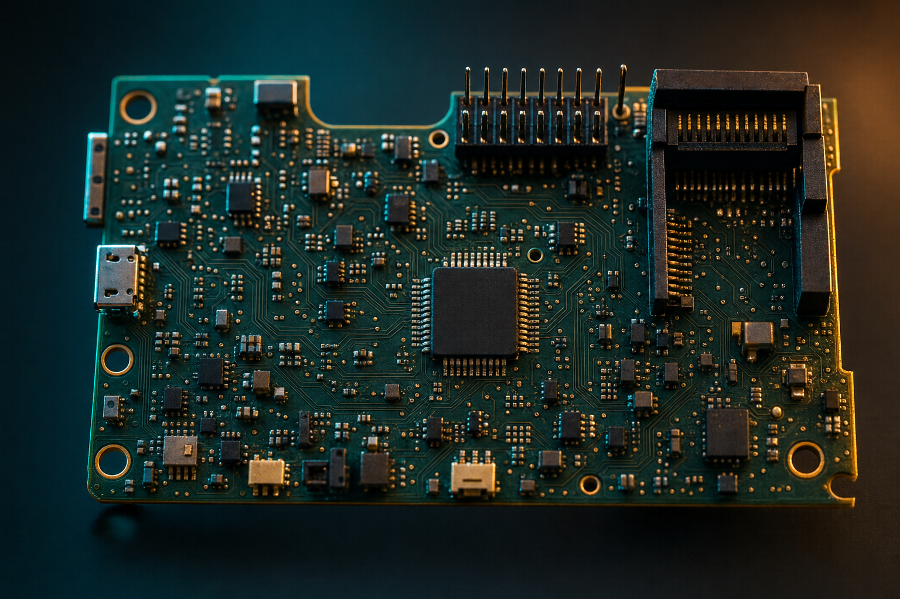

Select the procedure
A single SELECT input or your voice calls up the emergency checklist for the situation — engine fire, electrical, depressurization — as defined on the aircraft's config card.
Voice-driven · Hands-free · Demo
CheckM8 is a concept for a panel module that speaks and listens. It reads the right checklist aloud, follows your voice through every step, and drives a clear status annunciator — all defined per aircraft by a swappable config card.
Demo / training research project — not for actual flight operations.
How it works
A single SELECT input or your voice calls up the emergency checklist for the situation — engine fire, electrical, depressurization — as defined on the aircraft's config card.
CheckM8 announces each step over a dedicated audio channel and listens for your responses, advancing as you confirm each action by voice.
A split-legend annunciator shows OFF (white, top) and FAULT (amber, bottom). Active output inhibits the fault legend, and both halves are defined-OFF at boot.
A second microSD records the run. The config card defines the checklists; the data card keeps the record — swap either without re-flashing firmware.
Architecture
The concept keeps the checklist module separate from the aircraft's primary audio so it can hear and speak without interfering with normal panel operation.

Hardware
The concept centers on a small integration board that combines on-device voice processing, separate audio input and output, removable storage and annunciator drivers in one panel-friendly package.
A concept design — not a buildable product specification.
Project status & certification
CheckM8 is an engineering and research concept. It is not for actual flight operations, is not a certified device, and nothing here is operational or safety-of-flight guidance.
This is an early-stage exploration of how a voice-driven checklist could work. It is not a finished product and has not been qualified, tested, or approved for use in any aircraft.
Real-world use would raise questions around reliability, non-interference with required equipment, and audio clarity. These would all need to be addressed before any installation could be considered.
Nothing on this page is operational, safety-of-flight, regulatory, or legal advice. Any real-world application would require appropriate professional and regulatory review.
CheckM8 explores how voice could carry a pilot through the right emergency checklist — eyes up, hands on the airplane.
See how it works